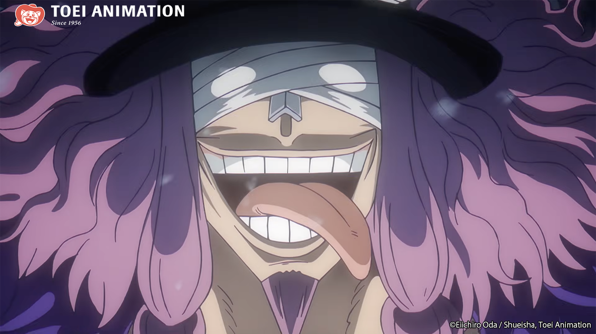

Mythic silhouette
Loki’s visual language leans into the scale and folklore of Elbaf: a giant body, a severe presence, and a design that reads as both royal and dangerous. For cosplay, shape and stance matter as much as individual accessories.
Royalty, confinement, and a name built for misdirection: a careful profile of Elbaf’s “Accursed Prince.”

Watch the licensed series page on Crunchyroll. Availability can vary by territory and subscription.
Open CrunchyrollLoki is introduced as a giant prince of Elbaf, the giant homeland at the centre of the current storyline. The story also presents him as the “Accursed Prince” and places him in confinement in Elbaf’s Underworld. His public image is shaped by the accusation that he killed his father, King Harald; the circumstances and meaning of that history are part of the story’s ongoing dramatic reveal.
That is the firm foundation for this profile: royal status, giant identity, the Accursed Prince title, imprisonment, and the connection to Harald. We avoid filling gaps with fan summaries or treating unresolved motives as settled biography.
Loki’s visual language leans into the scale and folklore of Elbaf: a giant body, a severe presence, and a design that reads as both royal and dangerous. For cosplay, shape and stance matter as much as individual accessories.
The prince title sits against the “Accursed” label. That contrast makes the character feel deliberately unstable: public legend, family history, and personal truth do not automatically align.
Confirmed role: Loki is a prince of Elbaf and a significant figure in the Elbaf arc. He is associated with the Underworld prison and the conflict around King Harald’s death.
Not confirmed here: definitive Devil Fruit details, complete power limits, final allegiance, and future crew membership. Treat social posts that present theories as spoilers and speculation, not as established fact.
Confirmed in the story: giant prince of Elbaf; called the Accursed Prince; imprisoned in the Underworld; son of King Harald; introduced during the Elbaf storyline; meets Luffy.
Theory: that Loki becomes the tenth Straw Hat, that he joins the crew, or that any particular power/prophecy guarantees that outcome. These are fan interpretations, not announcements.
Do you think Loki becomes the tenth Straw Hat?
YES — THE GIANT NAKAMANO — HIS ROLE IS DIFFERENTLoki’s full character debut is identified as One Piece chapter 1130, during the Elbaf storyline. The anime adaptation and its exact episode placement should be checked against the current official broadcast schedule; this page does not present an unverified episode number.
The story establishes Loki as the giant prince held in Elbaf’s Underworld, introduces the “Accursed Prince” label, and ties his history to the death of King Harald. His encounter with Luffy creates a direct bridge between the Straw Hats and Elbaf’s royal conflict.
Loki’s unusual scale, royal status, confinement, and narrative importance are established. Specific Devil Fruit claims, complete combat limits, and predictions about his allegiance are kept out of the confirmed list unless the official story settles them.
Loki functions as a pressure point in the Elbaf narrative: he is simultaneously a royal heir, a condemned figure, and a person whose version of events must be weighed against the community’s public story. That makes him important beyond a simple power ranking. His presence asks who controls a legend, who benefits from a label, and whether a kingdom can separate justice from inherited fear.
Editorial reading: this interpretation belongs to Dreaming Anime, not to Eiichiro Oda, Toei Animation, Shueisha, or any official licensee. Readers should use the source links below for canon and treat this paragraph as analysis.
Availability, territory, licensing, and prices change. The labels below describe the evidence level, not a promise of stock.
Bandai Collect’s public post identifies this One Piece figure and describes it as approximately 4 inches tall. Check the announcement and an authorised retailer for the current release and preorder details.
Bandai Collect sourceNo specific verified Loki clothing listing is claimed here. For a themed shirt, coat, or handmade piece, verify the seller, artwork rights, size chart, fabric, shipping, and returns before buying.
No specific verified Loki costume listing is claimed here. A cosplay build can be inspired by the character’s giant-prince silhouette, but it should be labelled a fan interpretation rather than official costume merchandise.
The Banpresto listing above is the only specific figure lead recorded in this feature. No price is stated because a live, territory-specific seller price was not verified.
No verified Loki accessory listing is claimed: do not treat generic horns, jewellery, props, or bags as licensed without a named manufacturer or license.
No additional verified Loki collectible is claimed. Check packaging, license information, seller identity, and product photography before purchasing.
No posters, plush, stationery, jewellery, or other Loki merchandise is presented as verified here. This restraint prevents invented stock, URLs, or prices.
Canon boundary: The facts above are limited to information presented in the manga/anime and clearly identified source material. Dreaming Anime interpretation is labelled separately below. Spoiler warning: this profile discusses Elbaf story material.
Licensed anime · CrunchyrollOfficial manga · VIZOfficial manga · MANGA Plus
Official video: Elbaph Arc Official Trailer · ONE PIECE (external YouTube link; Dreaming Anime does not host copyrighted video).

Products are separated by status so readers can distinguish a purchase lead from a themed idea. Prices, stock, shipping, and territory availability are intentionally not stated unless a live seller page verifies them.
Bandai Collect publicly identifies a Banpresto Mega World Collectable Figure: Loki. Follow the source announcement, then verify an authorised retailer before buying.
Bandai Collect sourceBandai Namco storeThemed / unverified: No specific verified Loki clothing, costume, armour, or accessory listing is claimed here. A themed outfit is an interpretation, not official merchandise. Check the maker's rights, measurements, materials, and returns.
Watchlist: No additional verified Loki accessory or collectible listing is claimed here. Avoid listings that omit license, manufacturer, seller identity, or clear product photography.
Verified words: “The Accursed Prince” is Loki’s documented epithet in official promotional material. No longer quote is presented here without a checked official transcript. This protects the difference between a verified line and a fan translation or theory.
Reputation is not the same as truth; inherited status does not remove responsibility; and unresolved history deserves careful attention before judgment.
Loki’s isolation, public label, family pressure, and desire to be understood are Dreaming Anime interpretation—not confirmed inner monologue.
His continued presence in the Elbaf conflict makes him a reminder that a difficult beginning does not settle a person’s entire story. This is editorial interpretation.
No canon mantra is asserted. Editorial takeaway: examine labels, seek context, and let actions—not rumours—carry the weight.
Practical takeaways: check primary sources; separate fact from prediction; ask what evidence supports a reputation; and choose licensed products when buying.
How should Loki’s role develop? This poll is an on-page editorial interaction only; no personal data or vote is stored.